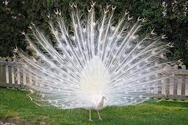

"Khổng tước" đổi hướng tới đây. Đối với các định nghĩa khác, xem Khổng tước (định hướng). Bài này nói về công là các loài chim thuộc bộ Gà. Xin xem các mục từ khác có tên tương tự ở Công (định hướng). Chim Công Thời điểm hóa thạch: 3–0 triệu năm trước đây TiềnЄЄOSDCPTJKPgN ↓ Late Pliocene – Recent Green Peafowl Pavo muticus Manipur by Raju Kasambe..jpg Con đực Tình trạng bảo tồn Nguy cấp (IUCN 3.1)[1] Phân loại khoa học Giới (regnum) Animalia Ngành (phylum) Chordata Lớp (class) Aves Bộ (ordo) Galliformes Họ (familia) Phasianidae Chi (genus) Pavo Loài (species) P. muticus Danh pháp hai phần Pavo muticus Linnaeus, 1766 Phân loài P. m. muticus Linnaeus, 1766 P. m. spicifer Shaw, 1804 P. m. imperator Delacour, 1949 Một con công lục đang xòe đuôi Công hay còn gọi cuông, nộc dung, khổng tước[2][3], công lục/xanh lá cây (Green peafowl) có danh pháp khoa học là Pavo muticus) là một loài chim thuộc họ Trĩ, chi Công được Linnaeus mô tả khoa học lần đầu năm 1766. Chim công sinh sống ở rừng nhiệt đới Đông Nam Á và phía nam Trung Quốc.[4]. Nó có mối quan hệ gần gũi với Pavo cristatus ở lục địa Ấn Độ. Công đã từng phân bố rộng rãi ở Đông Nam Á từ phía đông và đông bắc Ấn Độ, Bắc Myanma và miền nam Trung Quốc, mở rộng thông qua Lào, và Thái Lan vào Việt Nam, Campuchia, bán đảo Mã Lai và các đảo Java. Loài này được tìm thấy trong một loạt các môi trường sống bao gồm cả rừng nguyên sinh và thứ cấp, cả hai vùng nhiệt đới và cận nhiệt đới, cũng như thường xanh và rụng lá. Họ cũng có thể được tìm thấy trong các khu vực có cây tre, đồng cỏ, thảo nguyên, cây bụi và cạnh đất nông nghiệp..
Ảnh Minh Hoa